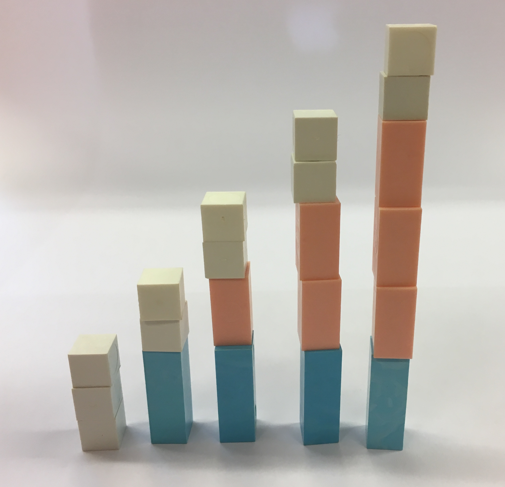

17. Aritmetisk talföljd
På bilden ser du klossar som följder ett visst mönster. Vilket är mönstret? Hur kan vi beskriva talföljden på ett matematiskt sätt?

Lösning
Vi märker att antalet klossar är följande:
\(a_1 = 3\)
\(a_2 = 3+2\cdot 1 = 5\)
\(a_3 = 3 +2\cdot 2= 7\)
\(a_4 = 3+2\cdot 3=9\)
\(a_5 = 3+2\cdot 4 = 11\).
Vi märker att värdet för elementen ökar med 2 för varje steg som vi tar.
Allmänt kan vi skriva talföljden som \(a_n = 3+ 2n, n=0,1,2,3, \ldots\).
I introduktionen med klossarna märker vi att varje stapel har två stycken flera klossar än föregående. Allmänt får vi att skillnaden mellan två element är \(a_{n+1} -a_n = 3+2(n+1)-(3+2n)=3+2n+2-3-2n=2\).
Eftersom skillnaden mellan två element hela tiden har samma värde talar vi om en aritmetisk talföljd.
En aritmetisk talföljd ser allmänt ut som
\(a_1 = a_1\)
\(a_2 = a_1+d\)
\(a_3 = a_1+2d\)
\(a_4 = a_1+3d\)
\(a_n = a_1+(n-1)d\) där \(d\) är skillnaden mellan två element.
Exempel 1 Visa att talföljden \(a_n = 3n-5\) är aritmetisk genom att allmänt bestämma skillnaden mellan två termer.
Lösning
Exempel 2 Bestäm regeln för den aritmetiska talföljden \(8, 3, -2, \ldots\). Bestäm det 15 elementet.
Lösning
Vi söker skillnaden mellan elementen, \(3-8=-5\) och \(-2-3=-5\), \(d=-5\).
Eftersom \(a_1=8\) och \(d=-5\) gäller att \(a_n=8-5(n-1)\) där \(n=1,2,3,\ldots\).
\(a_{15}=8-5(15-1)=8-5\cdot 14 = -62\).
Exempel 3 För en aritmetisk talföljd gäller att \(a_1 = 5\) och att \(a_{19} = 41\).
- Bestäm \(a_8\).
- Hur många element har ett värde under 500?
Lösning
- För \(a_{19}= a_1 + 18d\), alltså \(41=5+18d \Leftrightarrow d=\dfrac{36}{18} =\dfrac{4}{3}\).
\(a_8=a_1 + 7d = 5 + 7\dfrac{4}{3} = 14\dfrac{1}{3}\).
Det \(n\):te elementet ser ut som \(a_n=5+(n-1)\dfrac{4}{3}\). Vi löser olikheten
\(\begin{array}{rcll} 5 + (n-1)\frac{4}{3} & < & 500 \\ (n-1)\frac{4}{3} & < & 495 & \mid \cdot \dfrac{3}{4} \\ n-1 & < & 371,25 \\ n & < & 372,25 \\ \end{array}\)
Element \(a_{372}\) har ett värde mindre än 500.
En aritmetisk talföljd ökar eller minskar hela tiden lika mycket för varje element.
En aritmetisk talföljd ser allmänt ut som
\(a_1 = a_1\)
\(a_2 = a_1+d\)
\(a_3 = a_1+2d\)
\(a_4 = a_1+3d\)
\(a_n = a_1+(n-1)d\) där \(d\) är skillnaden mellan två element.
För en aritmetisk talföljd gäller att skillnaden mellan två element är konstant, \(a_{n+1} - a_n =d\).
Uppgifter
- Vad gör en talföljd till aritmetisk?
Den ökar eller minskar lika mycket för varje element.
- Bestäm de 4 första elementen för den aritmetiska talföljden \(a_n = 12-5n, n=1,2,3,\ldots\).
\(a_1 = 7, a_2 = 2, a_3 = -3 \) och \( a_4 = -8\).
- Visa att talföljden är aritmetisk genom att undersöka skillnaden \(a_{n+1} -a_n\).
\(a_{n+1} -a_n=12-5(n+1)-(12-5n) = 12-5n-5-12+5n = -5\). Skillnaden är \(-5\).
- Visa att talföljden är aritmetisk genom att undersöka skillnaden \(a_{n+1} -a_n\).
- Visa att talföljen \(3, 7, 11, \ldots\) är aritmetiskt.
Vi bestämmer skillnaden mellan element som är efter varandra,
\(7-3 = 4\)
\(11-7=4\).
Skillnaden mellan två element är 4. Talföljden är aritmetiskt.
- Bestäm det 25:e elementet.
Vi får att \(a_{25} = 3 + (25-1) \cdot 4= 99\).
- Bestäm det 25:e elementet.
- Visa att talföljden som bestäms av \(a_n = 2n-1\) är aritmetisk genom att allmänt bestämma skillnaden mellan två termer.
\(a_{n+1}-a_n=2(n+1)-1 - (2n-1)=2n+2-1-2n+1 = 2\).
- En talföljd består av elementen \(5, -1, -7, \ldots\). Bestäm regeln för talföljden och visa att den är aritmetisk.
\(a_1 = 5\)
\(a_2 = 5 + 1 \cdot (-6)\)
\(a_3 = 5 + 2 \cdot (-6)\)
\(a_n = 5 + (n-1)(-6)\).
Talföljden är aritmetisk eftersom \(a_{n+1} - a_n = 5+[(n+1)-1](-6)-[5+(n-1)(-6)] = 5+[n(-6)]-[5-6n+6] = 5-6n-11+6n = -6\).
Skillnaden är \(-6\) mellan två termer, talföljden är aritmetisk.
- Vilket värde har det 7 elementet?
\(a_7= 5 + (7-1)(-6)= -31\)
- Vilket värde har det 75 elementet?
\(a_{75} = 5 +(75-1)(-6) = -439\)
- Hur många element har ett värde som är större än -400?
Vi får olikheten \(5+(n-1)(-6) > -400\) som har lösningen \(n>\dfrac{137}{2} = 68,5\). Alltså 68 element.
- Vilket värde har det 7 elementet?
- Är talföljden som bestäms på följande sätt aritmetisk? Motivera!
- \(a_n = 8n - 4\)
\(a_{n+1}-a_n = 8(n+1)-4-(8n-4)=8n+8-4-8n+4=8\). Aritmetisk!
- \(a_n = n^2 +n\)
\(a_{n+1}-a_n = (n+1)^2+(n+1)-(n^2+n) = n^2+2n+1+n+1-n^2-n = 2n+2\). Inte aritmetisk!
- \(a_n = 2015 - 9n\)
\(a_{n+1}-a_n = 2015-9(n+1)-(2015-9n)=2015-9n-9-2015+9n = -9\). Aritmetisk!
- \(a_n = 8n - 4\)
I Aten finns Herodes Atticus Odeion. En teater från antiken. Längst ner i mitten finns scenen, orchestra. Scenen har en radie på 9,5 m. Läktaren, som börjar diekt fast i scenen, består av 32 st lika breda åskådarrader som alla är halvcirklar. Varje rad är 2,9 m längre den föregåede.

- Skapa en formel som anger längden för en bänkrad. Cirkelns omkrets \( p = 2\pi r \).
Då första raden börjar direkt vid scenen får vi längden av en rad till \(\dfrac{2\pi \cdot 9,5}{2} + n \cdot 2,9\) där \(n=0,1,2,3,\ldots\).
Alltså \(9,5 \pi + 2,9n\), \(n=0,1,2,\ldots\).
- Uppskatta hur många åskådare som rymms på 13 raden om vi räknar med att varje åskådare behöver 45 cm utrymme.
Antal personer på en rad är \(\dfrac{9,5\pi +2,9n}{0,45}\). Rad 13 betyder att indexet, \(n\), skall ha värdet 12. Eftersom rad 1 har index 0.
Antal personer är \(\dfrac{9,5\pi +2,9\cdot 12}{0,45} = 143,65\ldots\).
Alltså 144 personer.
- Vilken rad är den första som rymmer 250 åskådare?
Vi får ekvationen \(250 = \dfrac{9,5\pi + 2,9n}{0,45}\).
Ekvationen löser vi lätt för hand eller på GeoGebra. Vi får \(n = 28,5\), alltså 29.
Eftersom \(n=0\) betyder rad 1 så är \(n=29\) rad 30.
- Hur många åskådare rymms det totalt i på teatern?
Arbeta med LibreOffice. Exakt metod och formel kommer lite senare under kursen.
Vi får

Alltså 5317 åskådare.
- Skapa en formel som anger längden för en bänkrad. Cirkelns omkrets \( p = 2\pi r \).
- Hur många tal finns det som är delbara med 7 och vars värde är mindre än 800?
\(a_1 = 7 \cdot 1\)
\(a_2 = 7 \cdot 2\)
\(a_3 = 7 \cdot 3\)
\(a_n = 7 \cdot n\).
Alltså \( 7n < 800 \) som ger \( n < 114,29 \), alltså 114.
- Hur många av element av den aritmetiska talföljden \(4, 9, 14, \ldots\) har ett värde mellan 750 och 1000?
\(a_1 = 4 = 4 + 5\cdot 0\)
\(a_2 = 9 = 4 + 5\cdot 1\)
\(a_3 = 14 = 4 + 5\cdot 2\)
\(a_n = 4 + 5\cdot (n-1)\).
Element som har ett värde mindre än 1000 får vi genom att lösa olikheten \(4+5(n-1) < 1000 \) som ger \( n < 200,2 \approx 200\) st.
Element som har ett värde mindre än 750 får vi genom att lösa olikheten \( 4+5(n-1) < 750\) som ger \( n < 150,2 \approx 150\) st.
Antal element är 50 st.